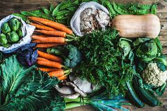

Roots
Root vegetables flourish in well-drained, deep, loose soil where their roots can easily expand. Root crops generally grow well in sandy loam and peat soil, and they tend to struggle in clay soils. The optimal soil pH for root growth is between 6 and 7. Most root vegetables need at least six hours of direct sunlight per day. Roots need extra phosphorus (the P in N-P-K), which can be found in bone meal, wood ashes, and rock phosphate. Incorporate high quality compost or well-rotted manure for good drainage, air circulation, and slow release nutrients